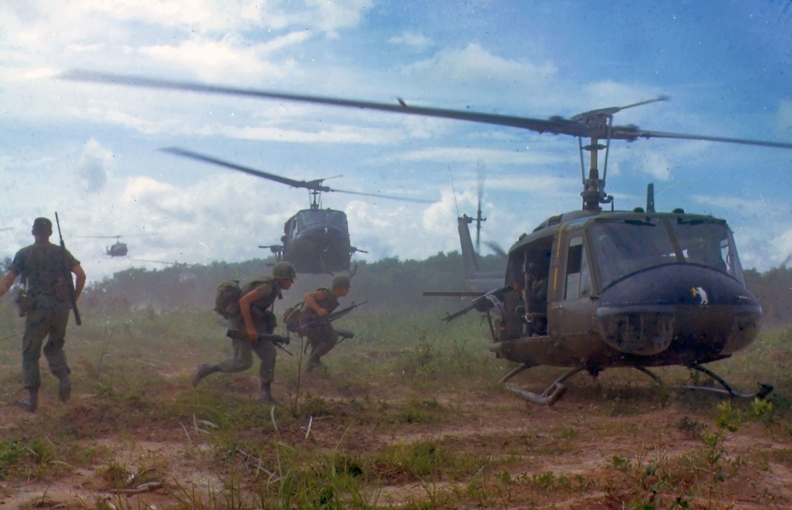
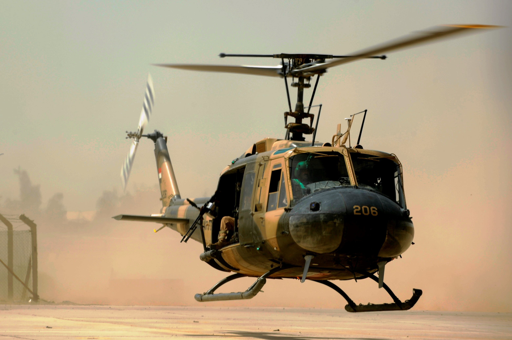
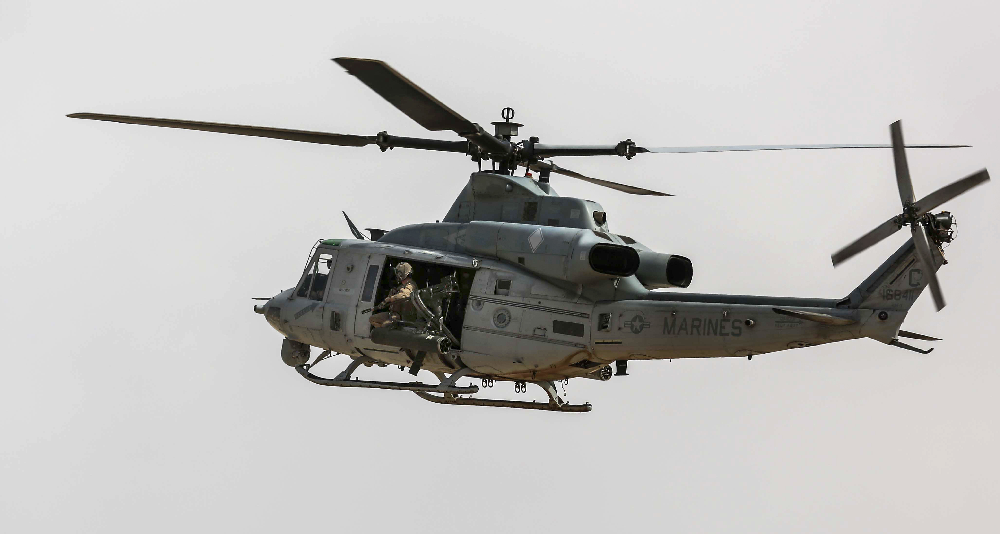

The huey was a staple of American Aviation throughout the Cold War. Since it's conception numerous models have been created and flown. The Huey was used primarily for troop transport, but also had secondary roles such as medevac and air support. The helicopter made many appearances in conflicts like the Vietnam War, Iraq War, Afganistan War, and more. In December of 2016, the U.S. Army UH-1 Huey 74-22478 made it's final flight and was retired as the last Huey in service. Since then the Blackhawk has taken over the role of the UH-1 and is one of the primary helicopters used by the U.S. Forces.
  